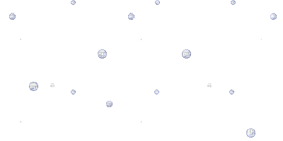
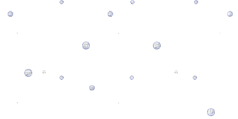

 Simple Sauerkraut
Simple Sauerkraut
Quick Facts
Total Time:Total Yield: 2 filled mason jars
Total Price:
Materials
2 canning/mason jars w/ lids
3 medium heads organic cabbage
1½ tablespoon sea salt *with NO iodine
 Instructions
Instructions
 Shred Cabbage
Shred Cabbage
- Rise outer cabbage leaves
- Remove outer layers of cabbage, set leaves aside.
- Shred/chop all 3 cabbage heads in thin, long strips.
Salt Cabbage
- Put cabbage into large bowl, pour all salt and mix in.
- Massage cabbage with clean hands for approx 5min+.
- The cabbage will begin to release water into the bowl. Squeeze cabbage, trying to get out as much water as possible.
 Fill Jars
Fill Jars
- Pressing down as you go, fill each jar with cabbage approximately 3/4 full.
- Evenly pour the water released over the cabbage in the jars.
- Put one of the large outer leaves you set aside earlier to cover the top of the cabbage in the jar, pressing down.
- Note: You want to make sure that all of the shredded cabbage is below the larger leaf, which is also under the liquid
 Fermentation
Fermentation
- Put the lid on the jar, hand tight.
- Put the jar somewhere to ferment at room temperature. I put mine in a kitchen cabinet.
- Wait.
The cabbage will begin to ferment, and you'll likely see bubbles forming in the next 24 hours.
- How long to let it ferment is a personal taste preference. Different bacteria strains take over at different times during the process. I tend to wait (14 - 20 days).
Notes
- All you need are simple, clean canning jars. There are crocks and special jars you can buy, but simple jars are all you need.
- ORGANIC Cabbage and NON-IODIZED salt are essential. Proper fermentation will be stunted otherwise.
- During fermentation, pressure will build inside the jar, pushing the lid up. You may need to "burp" your jars as they ferment, which is essentially opening the lid and releasing pressure. However, by opening the lid, you are introducing oxygen into the jar, which is an enemy of fermentation. I typically do not bother burping the jars, unless the pressure seems extremely excessive. When you burp the the jars, expect liquid to come out from under the lid as well, so you may want to do this inside a bowl to catch the liquid.